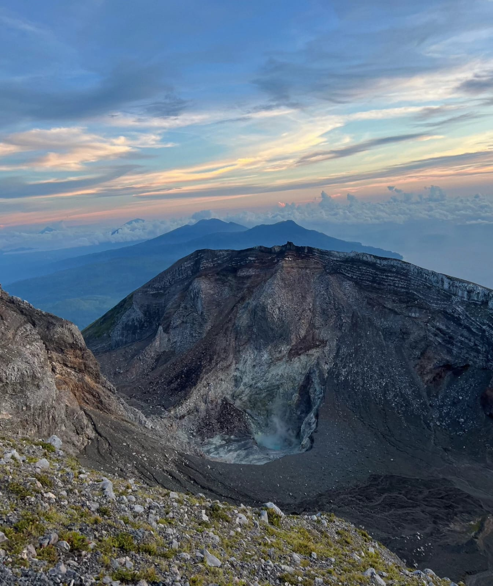
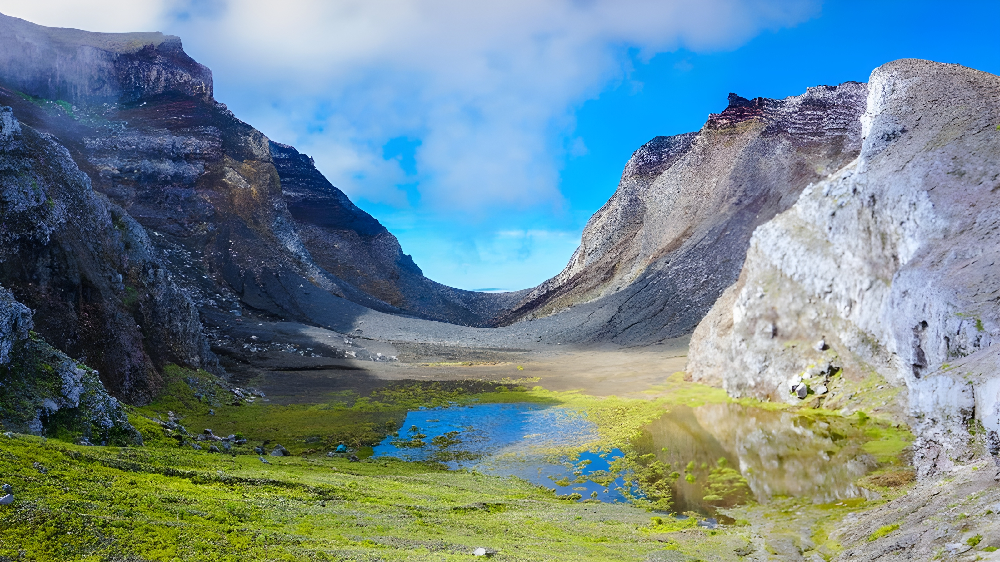

Mengenal lebih dekat keindahan alam dan karakteristik salah satu gunung berapi di Maluku Utara.

Gunung Gamkonora merupakan gunung berapi yang terletak di Pulau Halmahera, Kabupaten Halmahera Barat, Provinsi Maluku Utara.
Gunung ini menjadi salah satu bagian penting dari bentang alam Halmahera. Keberadaannya menghadirkan pemandangan alam pegunungan yang menarik untuk dikenal dan dipelajari.
Melalui halaman ini, pengunjung diajak untuk mengenal lokasi, karakteristik, serta daya tarik alam Gunung Gamkonora.
Beberapa informasi dasar untuk mengenal Gunung Gamkonora lebih dekat.
Pulau Halmahera, Kabupaten Halmahera Barat, Provinsi Maluku Utara.
Gunung berapi yang menjadi bagian dari kawasan vulkanik di Indonesia.
Kawasan pegunungan dengan bentang alam dan lingkungan alami khas Halmahera.
Gunung Gamkonora merupakan bagian dari kekayaan alam Maluku Utara. Bentang alam pegunungan di sekitarnya menjadi salah satu daya tarik yang menarik untuk diperkenalkan.
Keindahan alam tersebut juga mengingatkan kita akan pentingnya menjaga lingkungan, menghormati alam, dan memperhatikan keselamatan ketika berada di kawasan gunung.

Gamkonora bukan hanya tentang keindahan gunung, tetapi juga tentang alam dan kehidupan masyarakat di sekitarnya.
Kenali Budayanya